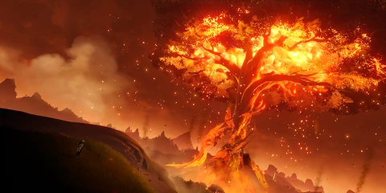

Sumeru · Quest Chronicles
Truth Amongst the Pages of Purana
Truth Amongst the Pages of Purana is an Archon Quest in Song of the Welkin Moon: Act X. The story returns to Sumeru, where the Traveler joins Nahida and allies in events involving Irminsul and the Ley Lines.

A later chapter returns to Sumeru
Truth Amongst the Pages of Purana is an Archon Quest in Song of the Welkin Moon: Act X. The chapter brings the Traveler back into Sumeru’s story and connects the region to new events surrounding Irminsul and the Ley Lines.
Its title also recalls the way Sumeru’s earlier story treated knowledge: information can be hidden, edited, or preserved by systems that shape what people remember. The new act builds on those ideas rather than replacing the older Sumeru chapters.
The stakes around Irminsul
Nahida and her allies face a threat aimed at Irminsul and the records stored through the Ley Lines. The conflict is not only about protecting a tree; it concerns the memories and identities of people whose lives depend on those records.
The story uses the Traveler’s unusual relationship to the world’s memory as part of the solution. That does not make the Traveler all-knowing. It gives them a different position from characters whose memories are recorded in Teyvat.
Connections to older Sumeru quests
To follow this act, it helps to remember Nahida’s earlier struggle with the Akademiya, the role of the Akasha, and the changes to Irminsul from Chapter III. Those events explain why Sumeru has special knowledge of the system and why the current threat matters.
The act also touches the desert’s records and current Nod-Krai characters. Readers should use the quest’s own sequence as the timeline, since the story crosses regions and older events.
How to separate confirmed events from theories
The quest confirms what characters do and what changes during its scenes. The meaning of every symbol or similarity to older books is not necessarily confirmed. A connection is strongest when a character, item description, or later quest states it directly.
This guide avoids presenting fan explanations of the new events as official answers. Follow the linked source and compare it with the earlier Irminsul and Ley Line records.
This is an original CoreGG reading guide, not an official HoYoverse article or a reproduction of the game text. Source links below identify the records used so you can check the original context.
Sources & references
Check these sources for the original game text and reference trail.